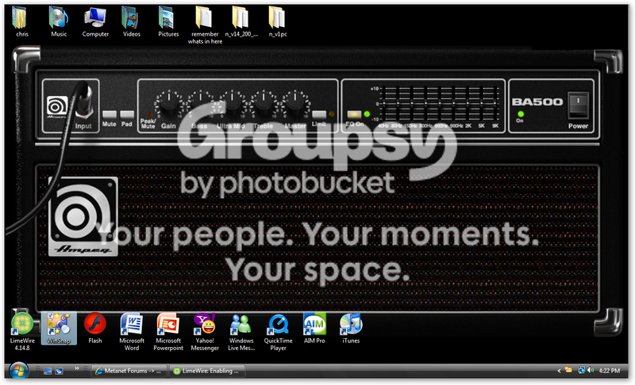

#370219 6 2007-10-07T05:10:12Z xboxzombie Revive is probably my favorite, but Gatorade still eats all of those flavors.
Agreed. But i like XXX and Formula 50 better.
#370220 21 2007-10-07T05:13:34Z xboxzombie Original. But game fuel kicks ass too.
#370221 14 2007-10-07T05:17:21Z xboxzombie clay and dog crap.
#374969 34 2007-10-28T06:10:02Z xboxzombie 0:53. I have a horrible lung capacity

#375844 1117 2007-10-31T23:34:40Z xboxzombie nothing special here.

#375850 117 2007-11-01T00:05:47Z xboxzombie Ill join.
#375916 9 2007-11-01T03:16:18Z xboxzombie Leave it as-is. It isnt a complete headache to sift through them.
#376205 23 2007-11-02T04:21:24Z xboxzombie Its the combination of good moderators and good people. There aren't enough dumb people to spoil the fun for everybody else.
#377275 15 2007-11-06T04:23:11Z xboxzombie People who do things like this are sick. None of this makes me laugh.
Agreed. Only a very sick minded individual makes a website like this.
#377296 111 2007-11-06T05:39:55Z xboxzombie shotgun turret
Abilities: shoots a short, but wide blast of bullets. (exactly like a shotgun) It takes very little time to aim once in range. (about 4 tiles)
Appearance: Exactly like a gauss turret but with a green inner circle. 2 lines or a shaded area will show its range once your detected.
why should it be in N?: it would make tight areas much more dangerous and will force players to act quickly get and stay safe.
#377661 138 2007-11-08T06:24:37Z xboxzombie I don't intend to buy it unless M&R release a demo. If its as good as everybody is making out to be ill pay up to $25 for it. Anything more is a bit steep if you ask me.
#377812 4 2007-11-09T02:41:39Z xboxzombie I agree with animator. But making a remark like that to a mod isnt the best way to get noticed...
#377817 74 2007-11-09T02:57:38Z xboxzombie Can you make a chain chomp drone?
#377819 3 2007-11-09T02:59:39Z xboxzombie Nice snapshot. I just found a new desktop.

#378711 6 2007-11-12T06:20:15Z xboxzombie something else i found: http://blueballfixed.ytmnd.com/

Its like a rube goldberg machine on cocaine.
#379315 39 2007-11-14T04:30:32Z xboxzombie I love how you can play with the position and action of all the objects. This is a must for people who make teleporters and moving walls. And I love the false tile blocks on the tileset menu. Its still blows me away youre only 12.
#379613 714 2007-11-15T06:15:38Z xboxzombie Nope.
gloomp?
#381366 4 2007-11-21T01:24:53Z xboxzombie That's actually a nice idea. even if you don't need to hide what your doing, its nice to see something other than gray.
#386476 46 2007-12-05T04:47:08Z xboxzombie Looks good. I love the new rocket trails and the menus the most though.
#386481 73 2007-12-05T05:02:16Z xboxzombie I hate it. It doesn't really display any useful information, so why have it?
Edit: Left alignment. Not as obvious.
#395293 58 2008-01-01T07:17:38Z xboxzombie Awesome. Now I really need a 360.
#395877 8 2008-01-02T22:24:01Z xboxzombie Be a nice feature for 1.5. It also be nice if you could import them from another source manually. Like from NUMA, or another version of N.
#397565 17 2008-01-06T05:46:05Z xboxzombie Personally, I'm pulling for Edwards. But i wont be too disappointed if he wins the primary. And I really don't think the fact he's black is really making an impact at all.
#397568 6 2008-01-06T05:56:38Z xboxzombie Pity it costs so damn much.
#398201 335 2008-01-07T04:53:15Z xboxzombie Sweet Home Alabama - Lynard Skynard
#398280 42 2008-01-07T08:05:48Z xboxzombie Colors: Red/Dark Red
Complexity: Simple
Theme: Zap Drone (By that i mean an insanely large zap drone centered on a simple background using the colors given.)
BG/FG Background
#399688 6 2008-01-11T07:44:16Z xboxzombie Also how do you delete something in NED+
I think he meant Nameless' Ned Plus. And for that you just right click for single objects, or right click and drag to clear an entire area.
#399843 9 2008-01-11T21:41:02Z xboxzombie Also in the origional i posted there is a kind of explosion, ow did i do that, i would like to do it again is possible.
I think it occurs when you appear in or very close to a wall in the first or second frame. But I could never get it to reliably happen. Well, at least I think thats why...
#399858 103 2008-01-11T22:14:34Z xboxzombie Name: Mimic drone
Description: A light green drone that takes the abilities and appearance of an drone it touches. But its an easy kill if it doesn't mimic an enemy. If it touches another enemy, it is forced to take the new ability.
Weapon: (None in its original form)
Mobile:Yes
Speed: Very Fast (As fast as Zap Drones when ninja is detected)
Defense: (None in its original form)
Attack Strength: None in original form.
Resistances:
- All attacks (original form)
Name: Homing Mimic Drone
Description: same as above, but can track the nearest drone and take its appearance.
Weapon: Same as above
Mobile: yes
Speed: fast (normal zap drone speed)
Defense: Same As Above
Attack Strength: Same As Above
Resistances : Same As Above
#400019 45 2008-01-12T07:57:54Z xboxzombie Laser Drones. Especially in pairs.
#400287 510 2008-01-13T00:23:05Z xboxzombie #400291 1579 2008-01-13T00:44:13Z xboxzombie ^ Banned For Having 3 pt. font in their sig.
#18869 1 2008-01-17T07:43:43Z xboxzombie Imagine you're hiding from a laser drone around a corner. But what if a mirror angled at a 45 degree angle allowed the drone to detect and fire its laser at you through the mirror. It could also let zap drones find and track you around the same corner. They could make levels more complex and make for even crazier DDAs.
See pic for example.

The blue "mirror" allows the laser to bounce off multiple points allowing it to hit the ninja despite the numerous walls protecting him.
The ninja above can easily be seen by the zap drone and it would speed up to kill the normally unseen ninja above.
#401760 10 2008-01-18T05:30:22Z xboxzombie It was suggested before, with major problems with processing speed. It would run frame by frame, particlarly if people make infinite loops.
Good point. I forgot to consider what it might do to the processing speed. That and the lag would probably make DDAs next to impossible to design and play.
#401763 13 2008-01-18T06:16:43Z xboxzombie Try installing new sound drivers. If that doesn't work, its definitely the soundcard.
#402611 55 2008-01-21T05:12:02Z xboxzombie Great Program. I don't know how to edit objects like change drone settings and I don't know how to delete objects singularly. Help? 
Right click the object. But like NED, anything on top of it gets erased first.
@ Nameless: In the next version, do you think you can add the ability to copy tiles like in NED?
#402615 504 2008-01-21T05:32:11Z xboxzombie 1: NUMA Integration
2: Wallguards (Floorguards that move vertically on walls)
3: Unlockable Headbands with Flavours
#403039 5 2008-01-22T04:42:27Z xboxzombie Next time you run N run the task manager on the side and watch the 'processes' screen (N in particular) That error typically happens when more than 100% of the CPU is trying to be used. (I get it all the time when i run multiple CPU intensive programs like N.) Set n at a higher priority and try not to run any other CPU intensive software.
Also weed out any unnecessary programs you got taking up your spare RAM as that also can trigger the Error. I run 1 Gig on my desktop and it still gets clogged up from time to time. (if your running Vista, This is probably an issue with just 512 Mb)
Last resort, Backup N and your .sol file to a removable drive and take bhz's advise.
#403047 5 2008-01-22T05:13:46Z xboxzombie 118. Pretty fun until you beat it.
#403981 4 2008-01-25T06:51:46Z xboxzombie #404302 8 2008-01-26T07:02:43Z xboxzombie Next to N, this is the best platformer iv'e played.
#405230 12 2008-01-29T05:40:55Z xboxzombie I'm pretty good at assembling/disassembling any kind of home electronic. But I struggling with soldering and removing soldered components since I'm just getting into that myself. I'm decently good at videogames (by no means the best.) When it comes to software, I can operate simple software. But i get lost easily in very complex programs. So id say good in general.
#405231 7 2008-01-29T05:48:06Z xboxzombie I'm waiting for it to come out on DVD. The trailers are hilarious, but then again Epic Movie sucked enough to make me think twice on seeing it on theaters where I can't get a refund.
#405606 11 2008-01-30T21:33:51Z xboxzombie Awesome. But some kind of NUMA Support would be even better. I'm still downloading it either way.
On that note, is there already a NUMA toolbar?
#405932 12 2008-01-31T23:42:04Z xboxzombie If its not a headache to put in, then i'd like to see it in 1.5
#405981 11 2008-02-01T03:45:15Z xboxzombie Normally i give a .5 unless they've really gone out on a limb to make something worth posting.
#405988 63 2008-02-01T04:09:07Z xboxzombie This is a great start. Its just bursting with potential. Keep it up
#406101 6 2008-02-01T20:54:40Z xboxzombie We can't do rocks because that means you have to aim. which is almost impossible given everything else you have to do.
Wallguards are definitely a good idea.
False tiles are already in N.
Mines should stay static. And homing zap drones do this already when the see you.
Maybe, but it may be a challenge to do since drones can't read sloped edges. (Can they?)
#406576 103 2008-02-03T05:19:19Z xboxzombie Shift. It's the biggest key next to space which is a bit uncomfortable for me. I tried up but I kept sliding of the left and right.
#406702 23 2008-02-03T19:44:56Z xboxzombie Its a Massive offer, but i think yahoo wont bite. Even if they did google would still blow them away like they always have.
Google FTW!
#406843 10 2008-02-04T05:26:39Z xboxzombie Glad to see the Giants win, There defense was great. But what was the whole one second thing about? I'm still confused why they stopped it instead of letting run to zero.
#406845 5 2008-02-04T05:33:51Z xboxzombie All the Pepsi and Bud Light ones were good. The Bridgestone one with Richard Simmons was good too.
#407012 4 2008-02-05T00:25:09Z xboxzombie Legal CDs.
#407365 23 2008-02-06T04:37:11Z xboxzombie Firefox.
#407367 5 2008-02-06T04:40:23Z xboxzombie 7200.
#19125 1 2008-02-09T19:17:29Z xboxzombie I loaded a map into the userlevel.txt file. But when I play the level, one of the thwumps is facing in the wrong direction. But when I check the code in the file itself, nothing has been changed, it is identical to a similar facing thwump (with different coordinates of course.) The level loads correctly in debug mode, but fails to do so when I test in the userlevel menu. I've tried replacing it, but it still loads wrong. Any suggestions?
(pic below)

#408463 4 2008-02-10T19:29:51Z xboxzombie Could you post the level data here so some of us can check on it too? Not that we don't believe you or anything.
The only thing I can think of is that you didn't insert the level in the right format or something. Check again to make sure it's in this format:
$title#author#type#level data#
Otherwise, post the data here so some of us can experiment with it. 
Sorry, here it is.
Attachment (lost): post-2-1202671791.txt
#408489 6 2008-02-10T21:11:29Z xboxzombie No problems from here. You probably added a character at the end, NaN-ing the thump's direction.
EDIT: You did that. The NaN thing. If it's anything other than a 3, then it was NaN'ed and faced down.
Ok, that worked. Thanks.
Edit: Is somebody going to close this?
#408866 32 2008-02-12T05:34:28Z xboxzombie Mostly C's through high school with the occasional D
#409010 26 2008-02-13T01:06:05Z xboxzombie Neutral evil.
#409021 3 2008-02-13T01:49:07Z xboxzombie Also try
Ned Plus
Has Doors, but its unstable if you messed with the userlevel.txt file.
#410087 4 2008-02-17T02:54:01Z xboxzombie Actually, I think he meant when you jump, it keeps going until you get back in sight. Then it double-backs towards you instead of going all the way to the end point of the floor. You can still trick them, they just come back as if they've been stopped.
It be nice. I don't see why you can't either...
EDIT: TFK beat me to it. Never mind.
#19243 1 2008-02-20T03:55:40Z xboxzombie Has anybody heard of this?
Plans For Dubai Arch Bridge#410831 5 2008-02-20T04:18:52Z xboxzombie It's a nice structure. It's a shame what will happen when Dubai's economy collapses along with the oil industry.
Thats why they keep building structures like this, there trying to convert from oil to tourism. The islands t3chno mentioned are actually resorts and vacation home plots.
#411383 3 2008-02-22T06:30:34Z xboxzombie Between cool and warm.
#411390 16 2008-02-22T06:49:13Z xboxzombie I agree with Scythe, but maybe well keep fan programs with N because its specific to the original N only. Well, for now anyways...
#411392 6 2008-02-22T06:53:01Z xboxzombie Looks like i missed it. Will it always be at 8:00 or will that change?
#411783 3 2008-02-23T23:31:41Z xboxzombie Most (All?) PC controllers can have their controls mapped to keyboard functions. Ive actually seen a few that look quite similar to a 360 or ps2 controller. Try buying one and mapping the controls to whatever feels right.
@ TB007: Ive heard of that, they use a Bluetooth adapter and some software to emulate the keyboard.
#412027 5 2008-02-25T05:21:00Z xboxzombie You can remap them to almost anything through the configure menu. Perhaps you can find an alternate for the jump key that the controller allows to be used simultaneously with the arrow keys. (A-W-D perhaps?) If you cant find an alternate, you just may be out of luck unfortunately.
Modified original Xbox controller? Did you just cut off the input port on it and solder in a USB port?